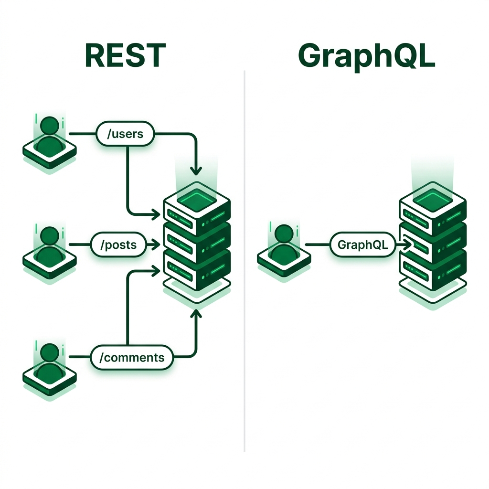
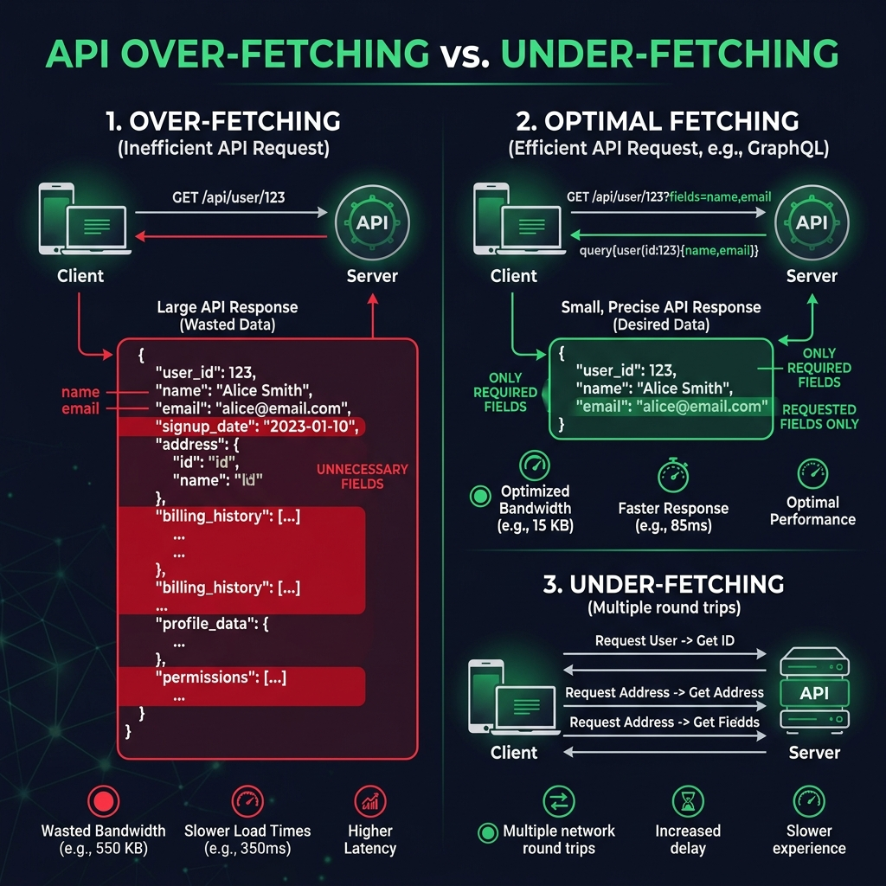
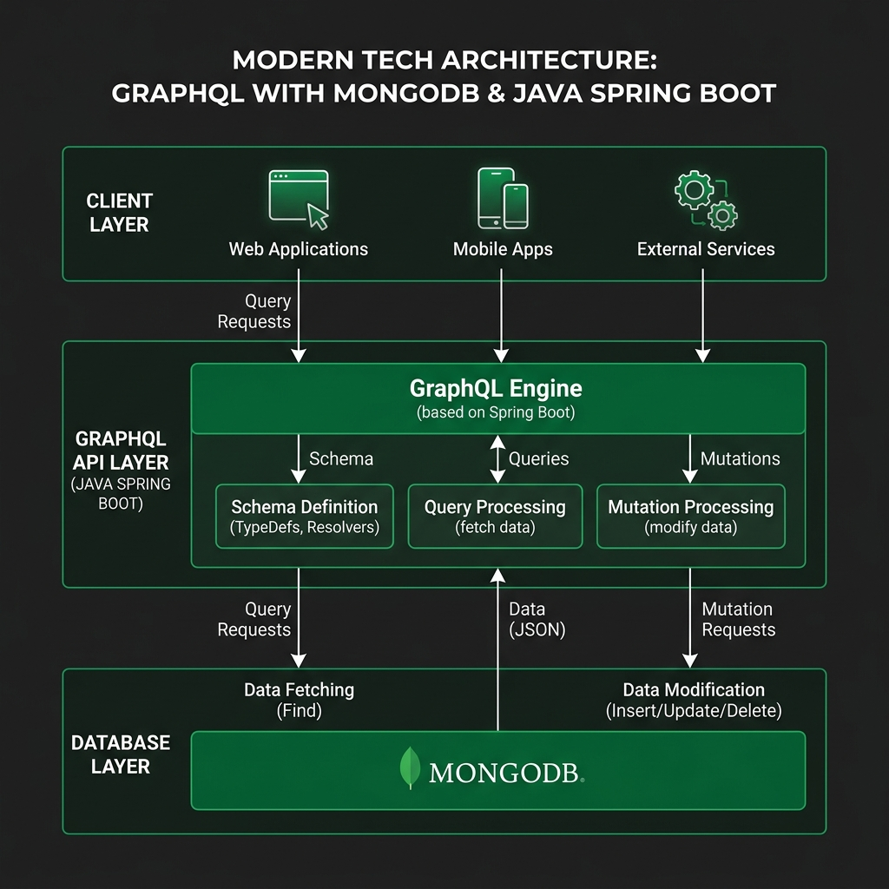

GraphQL vs REST API
Por que elegir GraphQL para tus APIs modernas
Ingenieria de Sistemas y Computacion • 2026
Que es REST?
REST (Representational State Transfer) es un estilo arquitectonico para APIs. Usa multiples endpoints con metodos HTTP estandar.
Multiples Endpoints
Cada recurso tiene su URL: /users, /posts, /comments
Sin Estado
Cada peticion es independiente y autocontenida
Metodos HTTP
GET, POST, PUT, DELETE para CRUD
Que es GraphQL?
Lenguaje de consultas para APIs desarrollado por Facebook (2012, open-source 2015). Un solo endpoint, el cliente pide exactamente lo que necesita.
Un Solo Endpoint
Todas las operaciones van a /graphql
Schema Tipado
Contrato fuertemente tipado entre cliente y servidor
Consultas Flexibles
El cliente define que campos recibir
REST vs GraphQL: Visual

- REST: Multiples endpoints, cada recurso es una URL
- GraphQL: Un solo endpoint, el cliente decide los datos
- REST: Respuestas fijas predefinidas por el servidor
- GraphQL: Respuestas dinamicas definidas por el cliente
Over-fetching y Under-fetching

Over-fetching
REST retorna TODOS los campos aunque solo necesites 2.
Under-fetching
Para datos relacionados necesitas multiples peticiones REST.
Tabla Comparativa
| Caracteristica | REST API | GraphQL |
|---|---|---|
| Endpoints | Multiples (/users, /posts) | Uno solo (/graphql) |
| Datos retornados | Estructura fija del servidor | Solo lo que el cliente pide |
| Over/Under-fetching | Problema comun | Eliminado por diseno |
| Tiempo real | Polling o WebSockets | Subscriptions nativo |
| Versionamiento | /v1, /v2, /v3 | Evolucion del schema |
| Cache | HTTP cache nativo | Requiere soluciones custom |
| Documentacion | Externa (Swagger) | Auto-documentado (introspection) |
Por que usar GraphQL?
Eficiencia en Red
Una sola peticion obtiene todos los datos incluyendo relaciones anidadas.
Developer Experience
Schema tipado, auto-documentacion, GraphiQL para explorar la API.
Ideal para Mobile
Conexiones lentas se benefician al recibir solo lo necesario.
Sin Versionamiento
Nuevos campos no rompen clientes. Los obsoletos se marcan deprecated.
Operaciones GraphQL: Schema
El schema define el contrato de la API. Es el corazon de GraphQL.
Operacion: Query (Lectura)
Las queries son el equivalente a GET en REST. Solo leen datos.
Peticion del cliente
Respuesta del servidor
Operacion: Mutation (Escritura)
Las mutations son el equivalente a POST PUT DELETE en REST.
Crear producto CREATE
Actualizar producto UPDATE
Mutation: Eliminar + Variables
Eliminar DELETE
Usando Variables
REST vs GraphQL: 3 peticiones vs 1
REST 3 peticiones
GraphQL 1 peticion
GraphQL en el Mundo Real
Empresas que lo usan
Facebook, GitHub, Shopify, Twitter, Airbnb, Netflix en produccion con millones de peticiones.
Caso GitHub
Migro de REST v3 a GraphQL v4 porque los clientes necesitaban datos de multiples recursos en una sola vista.
Cuando NO usarlo
APIs simples CRUD, microservicios internos, o cuando el cache HTTP es critico.
Mejor Practica
Usar como capa de agregacion sobre microservicios REST (patron BFF).
Fuente: r/graphql - Reddit Community
Arquitectura: Java + GraphQL + MongoDB

- Java 21 con Spring Boot 3.x
- Spring for GraphQL como motor
- MongoDB en Docker (localhost:27017)
- Lombok para reducir boilerplate
- Schema-first: archivo .graphqls + resolvers
- GraphiQL: UI web para probar queries
Codigo: Modelo con Lombok
Codigo: Controller GraphQL
Cuando usar cada uno?
Usa REST cuando...
- API simple con operaciones CRUD basicas
- Cache HTTP es critico
- Tu equipo ya domina REST
- Datos con estructura predecible y fija
- Microservicios internos simples
Usa GraphQL cuando...
- Multiples clientes con diferentes necesidades
- Datos complejos con relaciones anidadas
- Reducir peticiones de red es clave
- La API evoluciona sin romper clientes
- Tiempo real con subscriptions
Referencias
- 📚 DataCamp - GraphQL vs REST: Key Differences and Use Cases
- 💬 Reddit r/graphql - GraphQL vs REST in the Real World
- 📖 GeeksForGeeks - GraphQL vs REST: Which is Better?
- 🌐 Kong Inc. - GraphQL vs REST: Similarities and Differences
Universidad EIA • Ingenieria de Sistemas